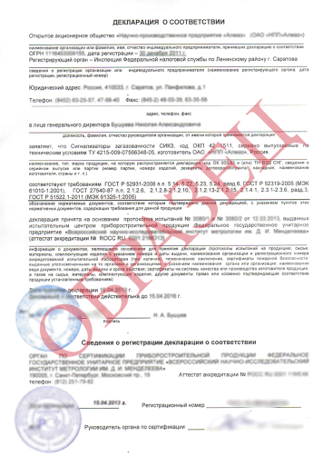

Сертификат соответствия
Сертификация продукции является одним из путей обеспечения высокого качества продукции, повышения научного и торгово- экономического сотрудничества между странами, укрепления доверия между ними.Мы расскажем, как предпринимателю разобраться в сертификации, в этой запутанной системе и ничего не нарушить. Давайте по порядку:
-
Сертификация продукции
Таможенный союз (далее ТС) — это форма экономического взаимодействия между странами, при которой упрощаются таможенные сборы и устанавливается единый тариф для всех участников. С 1 января 2015 года Таможенный союз — часть Евразийского экономического союза (далее ЕАЭС). На данный момент участниками союза являются Россия, Белоруссия, Казахстан, Армения и Киргизия.
С целью контроля за качеством продукции и безопасности ее использования странами-участницами ТС были разработаны технические регламенты (далее ТР) Таможенного союза (ТР ТС) и единая форма документов о подтверждении соответствия товара стандартам ТС — сертификат, декларация и СГР. С 2015 года понятия ТР ТС и ТР ЕАЭС обозначают одно и то же.
Сертификат соответствия Таможенного союза (СС ТР ТС, СС ТС, СС ТР ЕАЭС) — это официальный документ, подтверждающий соответствие качества продукта техническим регламентам, установленным Таможенным союзом (Евразийским экономическим союзом). -
Для чего нужен сертификат ТР ТС?
- сертификат информирует потребителей о качестве товаров;
- сертификат выполняет разрешительную функцию (если техническим регламентом предусматривается проведение сертификации);
- отсутствие документа о соответствии делает невозможным законное ведение любой коммерческой деятельности, включая производство, реализацию, импортные поставки;
- сертификат на продукцию необходим для участия в тендерах, а также для поставки товаров на массовый маркет.
-
Как получить сертификат соответствия?
Подача заявки на сертификациюРассмотрение и принятие решения по заявкеОтбор, идентификация образцов и их испытанияАнализ состояния производства (если предусмотрена схемой сертификации)Анализ полученных результатов, принятие решения о возможности выдачи сертификатаВыдача сертификата соответствияИнспекционный контроль за сертифицированной продукцией в соответствии со схемой сертификации
-
Как проверить сертификат на подлинность?
Всю информацию о действующих сертификатах можно посмотреть в Едином реестре сертификатов соответствия и деклараций о соответствии на сайте Росаккредитации
-
Если ваша продукция не указана в технических регламентах ТС (ЕАС), уточните ее наличие в:
- перечне продукции, подлежащей сертификации по Постановлению N 982 от 1 декабря 2009 (ГОСТ Р)
- перечне продукции, подлежащей декларированию по Постановлению N 982 от 1 декабря 2009 (ГОСТ Р)
СЕРТИФИКАТ СООТВЕТСТВИЯ - это официальный документ, который подтверждает безопасность продукции и соответствие ее требованиям того или иного Технического Регламента Таможенного Союза (Евразийского экономического союза).
Сертификат соответствия подтверждает, что продукция не нанесет вреда здоровью потребителей и может быть введена на рынок страны и реализована в торговой сети.Сертификация продукции, согласно техническому регламенту Таможенного союзаМы расскажем, как предпринимателю разобраться в сертификации, в этой запутанной системе и ничего не нарушить. Давайте по порядку:
-
Перечень действующих технических регламентов Таможенного союза:
- ТР ТС 001/2011 «О безопасности дорожного подвижного состава»
- ТР ТС 002/2011 «О безопасности высокоскоростного железнодорожного транспорта»
- ТР ТС 003/2011 «О безопасности инфраструктуры железнодорожного транспорта»
- ТР ТС 004/2011 «О безопасности низковольтного оборудования»
- ТР ТС 005/2011 «О безопасности упаковки»
- ТР ТС 006/2011 «О безопасности пиротехнических изделий»
- ТР ТС 007/2011 «О безопасности продукции, предназначенной для детей и подростков»
- ТР ТС 008/2011 «О безопасности игрушек»
- ТР ТС 009/2011 «О безопасности парфюмерно-косметической продукции»
- ТР ТС 010/2011 «О безопасности машин и оборудования»
- ТР ТС 011/2011 «Безопасность лифтов»
- ТР ТС 012/2011 «О безопасности оборудования для работы во взрывоопасных средах»
- ТР ТС 013/2011 «О требованиях к автомобильному и авиационному бензину, дизельному и судовому топливу, топливу для реактивных двигателей и мазуту»
-
Испытания продукции
Мы призываем за реальные испытания при сертификации продукции потому, что недобросовестные участники рынка сертификации делают невозможной здоровую конкуренцию.
Чтобы понять, каким образом она касается вас, просим задуматься над несколькими вопросами:-
Насколько вы уверены, что ваш продукт безопасен?
Каждый стандарт, на соответствие которому проверяется продукт, – результат многолетнего труда множества специалистов. Только это позволяет учесть возможные риски, прежде чем выпустить товар для всеобщего пользования. Ответственность за последствия всегда, в большей или меньше степени, лежит на производителе.
-
Вы уверены, что учли и выполнили все требования всех нужных регламентов и стандартов?
Продукт может быть безупречен с точки зрения потребительских свойств, но не удовлетворять требования регламентов. Тем более что очень часто одно изделие попадает под действие нескольких нормативных документов. Для того чтобы это учесть и понять, как реализовать на практике, нужны специальные знания.
-
Насколько вы уверены в партнерах и поставщиках?
Даже если вы полностью полагаетесь на внутренний контроль качества и считаете стороннюю экспертизу (сертификационные испытания) излишней, существуют риски нарушения качества на независящих от вас этапах. Уверены ли вы в том, что ваш китайский (корейский или даже немецкий) поставщик не подвел и проконтролировал все, от материалов до сборки?
-


Оставьте заявку и наши специалисты вскоре свяжутся с вами. Мы с удовольствием ответим на все ваши вопросы!